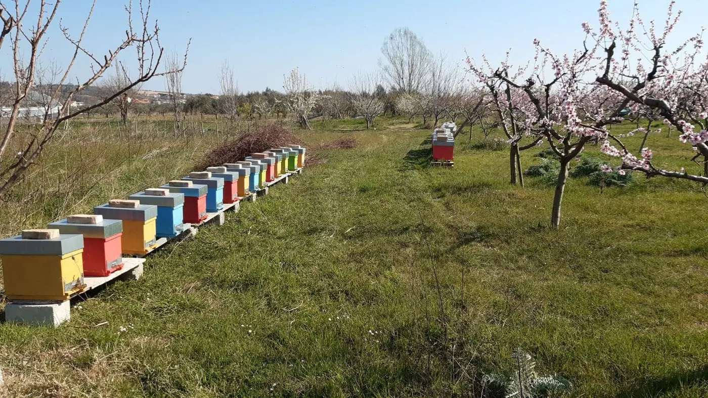
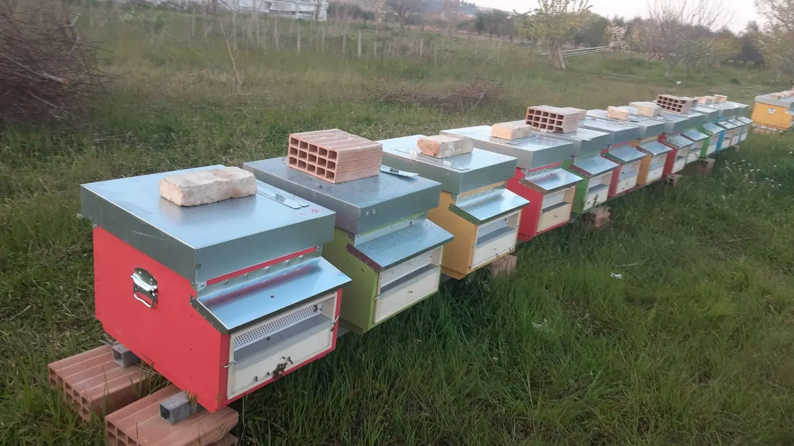
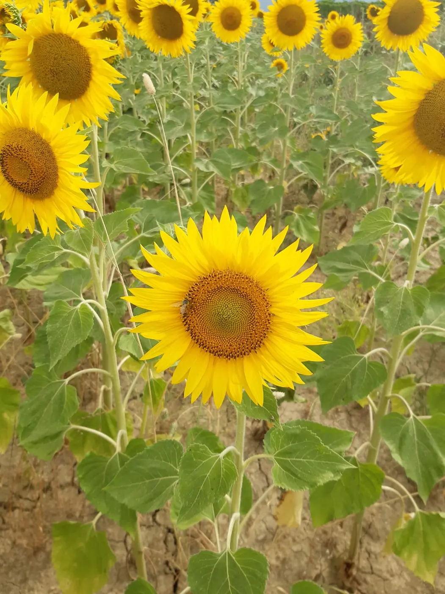

Miele di Acacia
- Fioritura
- maggio
- Colore
- chiarissimo, quasi trasparente
- Gusto
- delicato e dolce
- Stato
- resta liquido a lungo
250 g500 g1 kg
Azienda apistica · Notaresco (TE)
Miele naturale artigianale di acacia, millefiori e girasole, prodotto dalle nostre api a Notaresco e invasettato da noi, un vasetto alla volta.






Chi siamo
"La mia passione per le api ed il miele nasce in famiglia: è stato mio padre ad insegnarmi a conoscere questi animali ed a scoprire il loro mondo."
Una singola ape ha dietro di sé una moltitudine di sue simili, e ognuna ha il suo compito. Ogni giorno ognuna torna "a casa" dopo aver lavorato, proprio come noi, proprio come in una famiglia.
Mi ricordo quando per la prima volta ho visto un alveare e la paura che ho provato! Ma nello stesso momento ho osservato la naturalezza con cui mio padre si avvicinava e la cura che aveva in ogni gesto. Ho pensato che avrei voluto anch'io quella padronanza, mista a profondo rispetto verso un'opera così grande realizzata da creature così piccole.
Così tutto è iniziato: dal timore alla scoperta, dall'osservazione alla pratica, dall'ammirazione alla riconoscenza e alla passione.
Gabriele Di Giuseppe · apicoltore

Quando fioriscono i frutteti, le api ripartono.
Prodotti
Tre mieli, tre fioriture diverse. Ognuno ha il suo colore, il suo profumo e il suo modo di cristallizzare.


Vasetti da 40 g, ideali da assaggiare o da regalare.

Raccolto dalle nostre api, in granuli.

Fatti a mano e personalizzati per il tuo ricordo più dolce.
Vuoi assaggiare i nostri prodotti o ordinare un formato? Scrivici o chiamaci.
Richiedi informazioniLa nostra apicoltura
Un'apicoltura artigianale: arnie seguite una per una, il rispetto delle api prima di tutto e un miele che arriva in vasetto così come lo fanno loro.
Ogni ape ha il suo compito e ogni colonia va seguita da vicino: controlliamo la regina, la covata e le scorte, soprattutto prima dell'inverno.
L'acacia a maggio, il millefiori di primavera, il girasole in estate. Ogni miele nasce da una fioritura precisa e dal lavoro delle api in quel momento.
Smieliamo solo il miele opercolato, cioè maturo e già sigillato dalle api nelle cellette del favo. Poi lo invasettiamo noi, senza aggiunte.
Rubrica · Il calendario dell'apicoltore

Mese in corso
Cosa fiorisce
mesi di raccolto del miele


Servizio
Uno sciame si è posato in giardino, su un albero o su un muro? Interveniamo per recuperarlo senza fare del male alle api e dargli una nuova casa. Massima disponibilità.
Segnala uno sciame su WhatsAppHandmade
Matrimoni, battesimi, comunioni: prepariamo a mano bomboniere e segnaposto al miele, personalizzati. Chiama e personalizza il tuo ricordo più dolce.
Chiedi un preventivoFoto e video
Sciami, favi, smielature e qualche nevicata: il nostro lavoro raccontato per immagini. Tocca una foto per ingrandirla.
Video
I video sono ospitati su YouTube e si caricano solo quando premi play.
Il miele a tavola
Da sempre il miele è una valida alternativa allo zucchero: la sua composizione di glucosio e fruttosio lo rende, in cucina, insostituibile.
Inumidisce al meglio dolci e torte e ne allunga la conservazione. A crudo regala tutto il suo aroma, soprattutto con i formaggi.

Una versione light della torta di formaggio americana, dove yogurt greco e miele prendono il posto di panna e zucchero. Da servire da sola, con frutta fresca o con salse alla frutta o al cioccolato.
Con acaciaIl dolce delle feste, a Natale e a Carnevale: palline di pasta fritta, croccanti e irresistibili, affogate nel miele e coperte di confettini colorati.
Con millefioriUna delle ricette più semplici e più golose: bastano pochi minuti per una colazione veloce ma originale.
Con acacia o millefioriIl binomio perfetto per una colazione nutriente e golosa.
Con millefioriRavioli fatti in casa, ripieni di pecorino saporito e accompagnati da una coppetta di miele dolce.
Con acaciaRiconoscimenti


Certificazione 2023
"L'eccellenza è il giusto riconoscimento a chi fiducioso opera nel proprio settore con abnegazione ed entusiasmo, superando quotidianamente gli ostacoli e guardando al futuro con ottimismo."


Concorso C.A. Iannetti 2022
Due medaglie d'oro: una per il miele di acacia e una per il miele uniflorale, consegnate all'Istituto Agrario Di Poppa-Rozzi davanti a studenti e apicoltori. Leggi l'articolo
Recensioni
Valutazione su Google
"Ottimo miele. Alta qualità! Persona seria e disponibile. Consigliatissimo."
"Miele di ottima qualità. Titolare molto gentile e disponibile."
Adotta un'arnia
Con l'adozione sostieni un'apicoltura artigianale e la salute delle api del nostro territorio. In cambio ricevi il certificato con il nome della tua arnia e il miele che ha prodotto.
Compila il modulo con il pacchetto e il nome da scrivere sul certificato.
Gabriele ti ricontatta per confermare i dettagli e ti invia il certificato di adozione.
A fine stagione ti arriva il miele della tua arnia.
50 €/ anno
100 €/ anno
150 €/ anno
Riporta il nome che scegli tu, anche quello di una persona a cui vuoi regalare l'adozione. Ecco un esempio.
è custode di 60.000 amiche nell'apiario di Gabriele Di Giuseppe a Notaresco.
Contatti
Per ordini, assaggi, bomboniere o per uno sciame da recuperare.